Unity 5 Lighting Cookbook
Table of Contents
这是一篇译文，原文地址：http://www.edy.es/dev/docs/unity-5-lighting-cookbook/
<!– more –>
这篇笔记的主题是关于如何运用 Unity5 的光照。
文章中截图所示的工程可以在 Github 上找到，地址为 https://github.com/EdyJ/unity-5-lighting-cookbook
为了防止上面的 github 地址失效，我 fork 了一份，地址为 https://github.com/wolfand11/unity-5-lighting-cookbook
Standard realtime lighting 标准的实时光照
标准的实时光照包含了环境光照，环境反射以及实时光照和阴影。它不需要任何全局照明或预处理工作等等。Lighting->Scene 下的 Precomputed Realtime GI 和 Baked GI 选项都可以关闭。
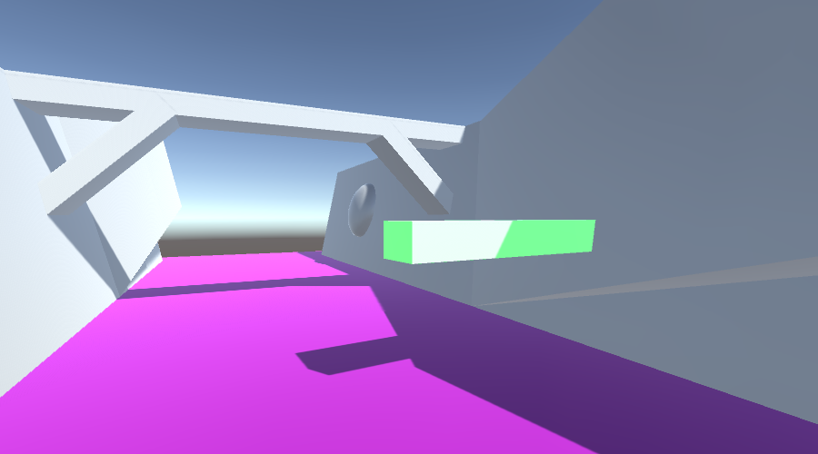
Ambient Light 环境光
环境光会影响到所有物体。
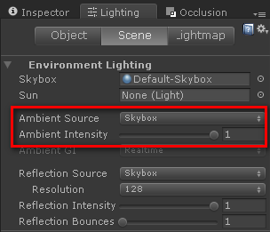
上图中选项可以设置 环境光源（天空盒，渐变色，颜色） 以及 强度
Environment Reflection 环境反射
反射路径会随着摄像机的角度而改变，独立于环境光被应用，也会影响菲涅尔效果。
如果反射探针被应用，他们将成为 Reflection Source ，并且这些反射探针的 Intensity 会影响物体，所以全局的反射设置不会影响这些物体。Reflection Bounces 定义了反射可以在多个探针之间可以回弹多少次（例如：一个探针采集的物体在另一个探针的影响下）。
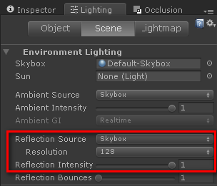
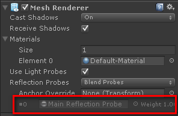
上面第一幅图片：Reflection Source (Skybox, Cubemap), Resolution and Reflection Intensity.
上面第二幅图片：一个反射探针影响这个物体，所以全局环境反射源不会影响这个网格。
Standard Lights
场景中，所有的标准实时光照应用方向光和阴影到物体上。
默认情况下，场景中的第一个方向光被当做太阳。默认的天空盒会基于太阳的水平倾斜度来调整它的强度和颜色。也可以选择特定的方向光作为太阳来影响默认的天空盒。
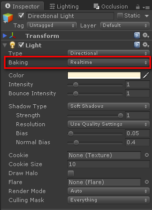
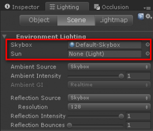
Precomputed realtime lighting 预计算的实时光照
预计算的实时光照添加了实时的光照回弹，颜色渗透以及发光材质。任何属性都可以动态的修改（灯光颜色、强度、材质颜色、材质发射颜色等），场景中的光照会实时地对应获得更新。
Lighting > Scene > Precomputed Realtime GI enabled, Baked GI disabled.
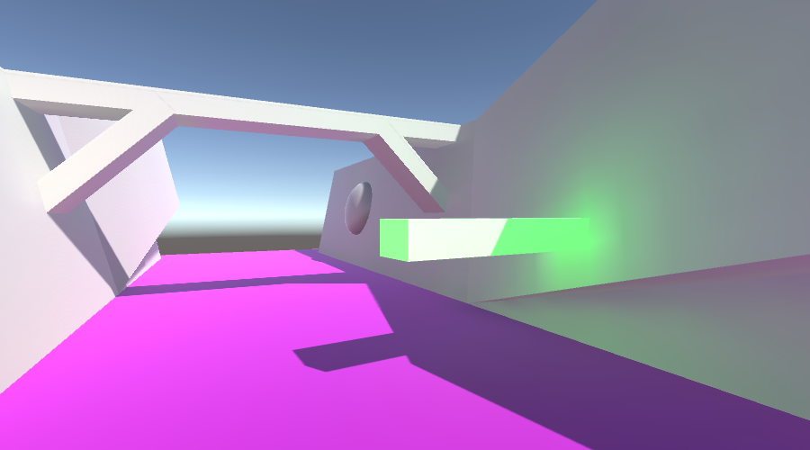
Light Bounces 光照回弹
每个灯光可以被配置为从物体反弹并且影响其他的物体。
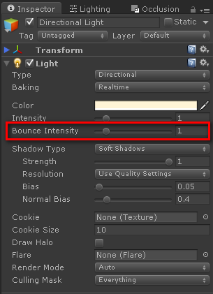
Emissive Materials
被标记为 Static 物体包含一个发射材质会依据它自己的几何形状来发光。

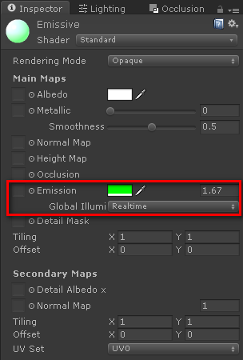
场景中被标记为 Static 的物体上会执行预计算实时光照。当被标记为 Static 的物体的 Transform 被改变，或者 Static 标记本身改变都会触发预计算阶段。
参数 Lighting > Scene > Precomputed Realtime GI > Realtime Resolution 直接影响预计算数据所花费的时间。在 Unity 编辑器中使用尽可能低的值(0.01-0.5)可以快速的创建原型。
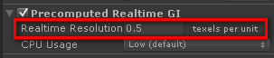
CPU 的使用会影响运行时动态光照改变的反应。在编辑器中烘焙预计算数据的 CPU 使用是不会有什么影响的。
光照回弹和材质发射只会影响静态物体。预计算效果要应用到动态物体上必须使用光照探针。
Ambient Light in precomputed realtime lighting
环境光会影响到一个静态几何体的一些不同部位。这些部位会被光源从外部照射到，背面也包括在内。例如，在室内场景中由静态几何体定义了封闭的外壳，环境光对静态网格将不会有任何影响。如果光通过物体的任何缝隙或部位进入静态几何体内部，则该静态物体将会受到对应环境光的影响。
Baked lightmaps 烘焙光照
环境光，标准光照（烘焙或混合），光照回弹以及发射材质都被烘焙到光照贴图中。只有环境反射可以在运行时修改。
Lighting > Scene > Baked GI 开启, Precomputed Realtime GI 关闭.
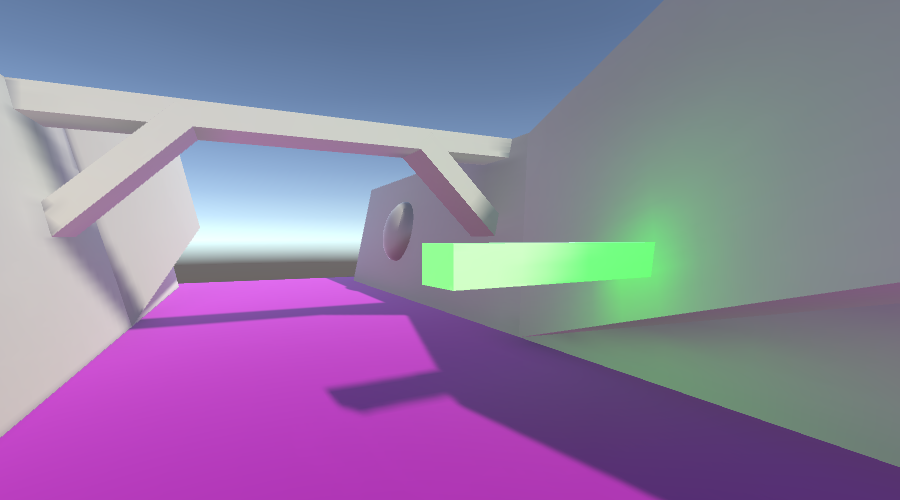
标准光照可以被配置为 Baked 或者 Mixed 从而允许无缝地在只烘焙和只实时全局光照模式之间切换.
参数 Lighting > Scene > Baked GI > Baked Resolution 直接影响生成光照贴图所花费的时间。使用编辑器时，尽可能使用 1-4 来快速建立原型。
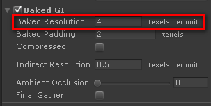
修改任何涉及到的光照（环境光，标准光照，光照回弹，发射材质）参数，或者修改任何静态物体将会触发新光照贴图的计算阶段。
General GI settings 通用的全局照明设置
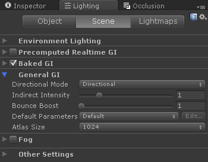
间接光照包括环境光、光照回弹、发射材质(在靠近的物体上的光照效果，不是发射物体他们自己上的)的光照效果，但不包括环境反射的光照效果。Scene 视图窗口中选择 Irradiance 可以显示场景中的间接灯光：
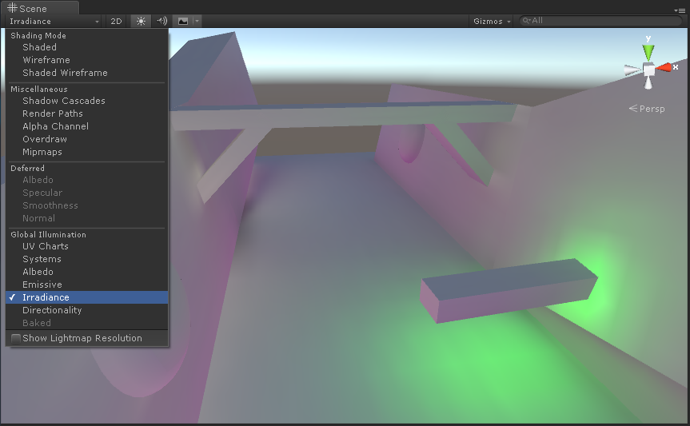
下面这些设置会同时影响直接光照，无论是实时模式还是烘焙模式：
Indirect intensity (间接光照强度)： 缩放直接光照(环境光照+回弹的光照+发射的光照)
Bounce Boost (回弹增量): 光从一个表面回弹到下一个表面的强度. 回弹的光和物体表面的照度相乘通过该设置来增强。
下面的设置只会影响烘焙全局照明模式：
Directional mode (方向模式): 烘焙模式下，在光照贴图中是否保存方向和镜面信息。
Atlas size (atlas 尺寸): 烘焙模式下，光照贴图的尺寸.
Combining different lighting methods 组合不同的光照方法
Unity5 的教程-Lighting and Rendering 对于理解 Unity5 中全局照明来说是必读的.下面引号中的内容就是摘自这篇教程。
这篇教程的地址：
Precomputed realtime lighting + Baked lightmaps
预计算实时光+烘培光照贴图同时开启，这样的做法不是一个好主意，即使默认情况下会同时开启这两种光照：
// 下面引用自 Unity5 的教程-Lighting and Rendering 尽管可以同时使用烘焙全局光照和预计算实时全局光照，需要注意的是同时渲染两个系统所涉及的性能消耗是他们每个所消耗的总和。我们不仅需要存储两套光照贴图到显存中，而且我们也要在着色器中负担这两套光照贴图的解码处理。 ...... 使用哪种方式必须基于你的项目性质和目标平台来进行评估。记住当面对多个不同的硬件平台，通常最低性能的平台将会决定采用什么样的方式。
Standard realtime lighthting + Baked lightmaps
标准实时光照 + 烘培光照贴图。对于处于相同的恒定光照条件下的静态和动态的物体来说，这是一个实用的方法：
在 Light 组件中，选择'Mixed'烘焙模式，被标记为静态的物体将在他们的烘焙光照贴图中包含这个光照。然而，不同于被标记为'Baked'的光照，混合的光照将依然会对非静态的对象产生实时、直接的光照效果。当你在静态环境中需要使用光照贴图，但是你依然希望有一个角色使用这些相同的光照来产生实时的阴影到采用光照贴图的几何体上时，'Mixed'方式将会很有用。
Generating lightmap files 生成光照贴图
默认情况下，每次光照贴图计算阶段被触发时(例如，移动静态元素)，光照贴图文件在内部被生成和存储。
通过关闭 Lighting 窗口中的自动选项，然后，点击 Build 按钮，这样光照贴图也可以被手动计算。生成的图片会被存储在和场景同名的文件夹下。烘焙数据包含了光照贴图和反射探针。
General GI 部分的 Directional Mode 和 Atlas Size 参数会影响光照贴图的类型和数目。
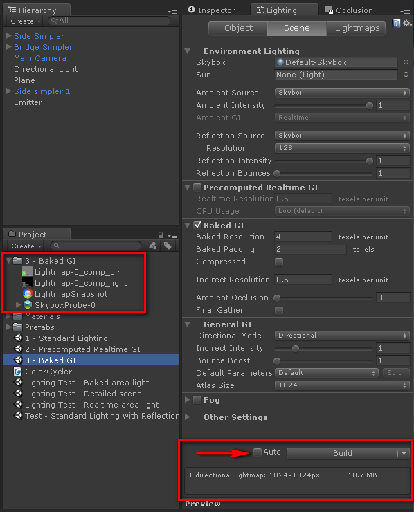